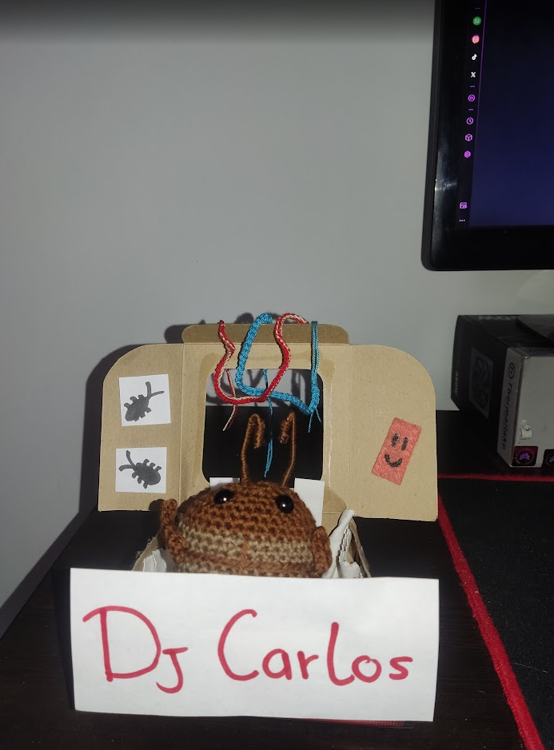
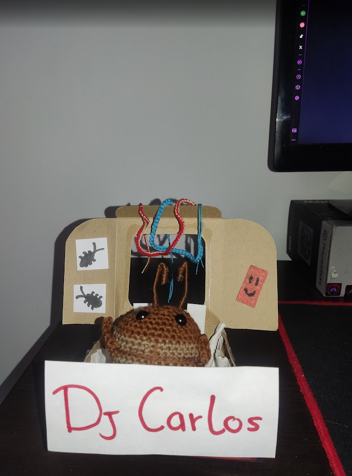

Dj carlos
Mi homie DJ Carlos
Mi homie dj carlos es una adaptacion a la cucaracha dj y al meme de la cucaracha carlos, siendo asi una adaptacion de dos memes q me gustan mucho c:
Mi homie DJ Carlos
Mi homie dj carlos es una adaptacion a la cucaracha dj y al meme de la cucaracha carlos, siendo asi una adaptacion de dos memes q me gustan mucho c:
Yo cuando soy yo

Me when i es un meme referente al yo mismo y como yo soy cuando soy yo y no cuando no soy, esta weno
Bolsa de creador de contenido

yo cuando yo, efectivamente, yo cuando termino de editar un tiktok (la idea se veia mejor en mi cabeza)